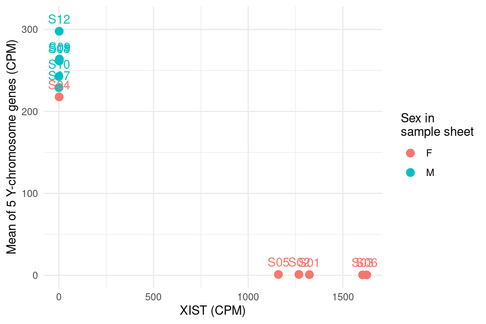
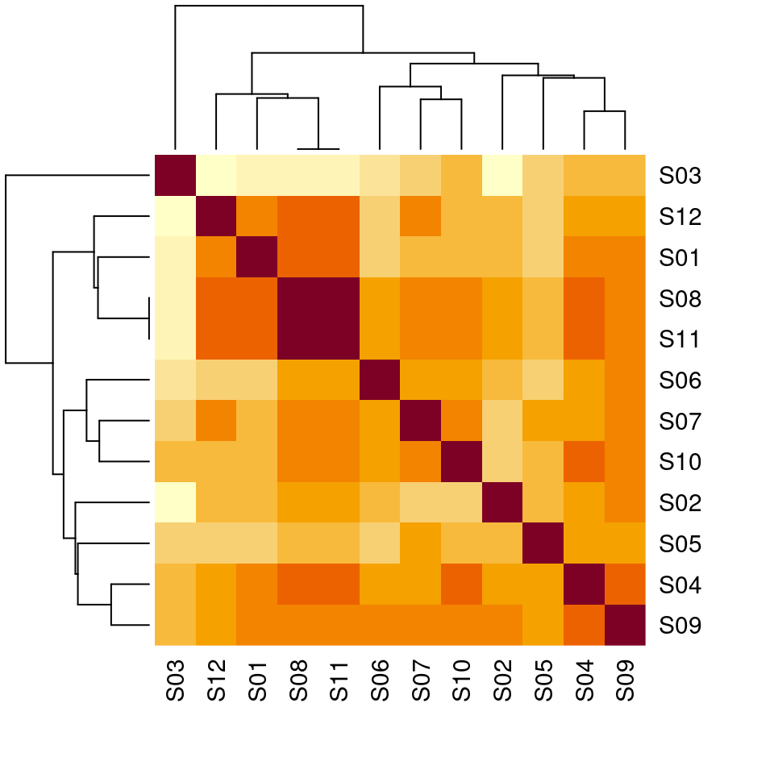

Data challenges
A treasure awaits you across the sea of data!
> islands_found() [1] 0 of 4
Treasure found!
Well done sailoR! You have solved all four data challenges. A reward awaits you!
You will have one short data challenge per day, each with one exact answer. Type the answer in the box to check it. Every challenge you solve lifts the fog from one island and draws the next stretch of the route. Solve all four to find the treasure.
Pirates need their crew! Talk to your colleagues and discuss strategy, exchange tips! Use the hints for each challenge, and try to limit the use of AI.
The challenges
🧫 Mon · Colonies
🧫 Monday · Countable Colonies
The scenario. You diluted a bacterial culture 1,000 to 1,000,000 times, spread 0.1 mL of each dilution on three plates, and counted the colonies the next day. Some plates were too crowded to count: you wrote TNTC (too numerous to count).
Your task. Estimate the concentration of the culture in colony-forming units per mL (CFU/mL):
- only use plates with 30 to 300 colonies (the countable range),
- for each of those plates, CFU/mL = colonies ÷ (dilution × volume plated),
- take the mean of these values.
Report log10 of the mean CFU/mL, rounded to 2 decimals (e.g. 7.12). log10() works like log2(), with base 10.
Get the data
Copy these lines into R:
# Colony counts from 12 plates (3 plates per dilution)
colonies <- c("TNTC", "TNTC", "TNTC", "TNTC", "TNTC", "TNTC", "295", "259", "289", "16", "36", "33")
dilution <- c(1e-03, 1e-03, 1e-03, 1e-04, 1e-04, 1e-04, 1e-05, 1e-05, 1e-05, 1e-06, 1e-06, 1e-06)
volume_ml <- 0.1 # volume spread on each plateHint 1
What type iscolonies? What happens when you convert it with as.numeric()?
Hint 2
Build one logical vector that isTRUE for countable plates, and use it to select from both colonies and dilution.
🔓 Solution walkthrough (click to view)
Step 1: Look at the data
colonies
typeof(colonies)## [1] "TNTC" "TNTC" "TNTC" "TNTC" "TNTC" "TNTC" "295" "259" "289" "16"
## [11] "36" "33"
## [1] "character"The counts are text, because of the "TNTC" plates (too numerous to count).
Step 2: Turn the counts into numbers
counts <- as.numeric(colonies) # "TNTC" becomes NA, with a warning
counts## [1] NA NA NA NA NA NA 295 259 289 16 36 33Step 3: Keep only the countable plates
countable <- !is.na(counts) & counts >= 30 & counts <= 300
countable
sum(countable)## [1] FALSE FALSE FALSE FALSE FALSE FALSE TRUE TRUE TRUE FALSE TRUE TRUE
## [1] 5The plate with 16 colonies is too sparse to count reliably, so it’s out.
Step 4: CFU per mL for each countable plate
CFU/mL = colonies ÷ (dilution × volume plated):
cfu_per_ml <- counts[countable] / (dilution[countable] * volume_ml)
cfu_per_ml## [1] 2.95e+08 2.59e+08 2.89e+08 3.60e+08 3.30e+08Step 5: Mean, log10, round
mean_cfu <- mean(cfu_per_ml)
mean_cfu
round(log10(mean_cfu), 2)## [1] 306600000
## [1] 8.49The answer is 8.49, i.e. about 3.1e+08 CFU/mL.
The traps
Using every plate with a number, including the one with 16 colonies:
all_plates <- !is.na(counts)
round(log10(mean(counts[all_plates] / (dilution[all_plates] * volume_ml))), 2)## [1] 8.45Forgetting the plated volume (0.1 mL) gives a result 10 times too small:
round(log10(mean(counts[countable] / dilution[countable])), 2)## [1] 7.49Lessons: text in a numeric column turns everything into text; vectors of the same length line up element by element (each count with its own dilution); a logical vector selects the elements you want.
🐭 Tue · Mice
🐭 Tuesday · Mouse Mismatch
The scenario. You weighed 20 mice. The weights come from the scale; the genotypes (wild type, WT, or knockout, KO) come from the animal facility, in a separate table. Do knockout mice weigh more?
Your task. Combine the two tables, so that every mouse has both its weight and its genotype. Then calculate the mean weight of the KO mice minus the mean weight of the WT mice, rounded to 2 decimals (e.g. 0.12).
Get the data
Copy these lines into R. They read both tables straight from the web (you’ll learn all about reading files on Friday):
weights <- read.csv2("https://raw.githubusercontent.com/NBISweden/workshop-r/master/data/challenges/mouse_weights.csv")
genotypes <- read.csv("https://raw.githubusercontent.com/NBISweden/workshop-r/master/data/challenges/mouse_genotypes.csv")Hint 1
Look at both data frames withhead() and str(). Are the mice in the same order in both tables? Can you just put the columns side by side?
Hint 2
Does every ID appear in both tables? (x %in% y checks, for each element of x, whether it is in y.) After merging, how many rows do you have?
🔓 Solution walkthrough (click to view)
Step 1: Read and look
Read both tables (the same files as in “Get the data”) and look at them:
weights <- read.csv2("data/challenges/mouse_weights.csv")
genotypes <- read.csv("data/challenges/mouse_genotypes.csv")
head(weights)
head(genotypes)## id sex weight_g
## 1 M01 F 23.7
## 2 M02 F 23.5
## 3 M03 F 23.2
## 4 M04 M 24.3
## 5 M05 M 27.4
## 6 M06 M 27.1
## id genotype
## 1 M17 KO
## 2 M16 KO
## 3 M04 WT
## 4 M06 WT
## 5 M01 WT
## 6 M13 WTThe mice are in a different order in the two tables, so we can’t just put the columns side by side.
Step 2: Check that the IDs match
Before merging, check that every ID appears in both tables:
weights$id %in% genotypes$id # is each weight ID in the genotype table?
weights$id[!weights$id %in% genotypes$id] # which one isn't?
genotypes$id[!genotypes$id %in% weights$id]## [1] TRUE TRUE TRUE TRUE TRUE TRUE FALSE TRUE TRUE TRUE TRUE TRUE
## [13] TRUE TRUE TRUE TRUE TRUE TRUE TRUE TRUE
## [1] "M07"
## [1] "m07"m07 was typed in lower case. Fix it with toupper():
genotypes$id <- toupper(genotypes$id)
all(weights$id %in% genotypes$id)## [1] TRUEStep 3: Merge by ID
mice <- merge(weights, genotypes, by = "id")
nrow(mice) # all 20 mice
head(mice)## [1] 20
## id sex weight_g genotype
## 1 M01 F 23.7 WT
## 2 M02 F 23.5 KO
## 3 M03 F 23.2 WT
## 4 M04 M 24.3 WT
## 5 M05 M 27.4 WT
## 6 M06 M 27.1 WTStep 4: Compare KO and WT
mean_ko <- mean(mice$weight_g[mice$genotype == "KO"])
mean_wt <- mean(mice$weight_g[mice$genotype == "WT"])
mean_ko
mean_wt
round(mean_ko - mean_wt, 2)## [1] 27.12
## [1] 25.38
## [1] 1.74The answer is 1.74: knockout mice are about 1.74 g heavier.
The same with the tidyverse
library(dplyr)
genotypes |>
mutate(id = toupper(id)) |>
inner_join(weights, by = "id") |>
group_by(genotype) |>
summarise(n = n(), mean_weight = mean(weight_g))## # A tibble: 2 × 3
## genotype n mean_weight
## <chr> <int> <dbl>
## 1 KO 10 27.1
## 2 WT 10 25.4The traps
Putting the columns side by side matches mice by position, so the genotypes end up attached to the wrong mice:
wrong <- data.frame(weight_g = weights$weight_g, genotype = genotypes$genotype)
round(mean(wrong$weight_g[wrong$genotype == "KO"]) -
mean(wrong$weight_g[wrong$genotype == "WT"]), 2)## [1] 0.92Merging without fixing m07 silently drops one mouse:
mice19 <- merge(weights, read.csv("data/challenges/mouse_genotypes.csv"), by = "id")
nrow(mice19)
round(mean(mice19$weight_g[mice19$genotype == "KO"]) -
mean(mice19$weight_g[mice19$genotype == "WT"]), 2)## [1] 19
## [1] 1.69Lessons: merge by ID, never by position. After a merge, check the number of rows.
Coming on Wednesday: is a difference of 1.74 g real, or could it be chance? The statistics lecture shows how to test it, e.g. with t.test(weight_g ~ genotype, data = mice).
🧬 Wed · Primers
🧬 Wednesday · Primer Pairs
The scenario. A colleague designed forward (F) and reverse (R) qPCR primers for 30 genes and typed them into a spreadsheet. Before ordering, you check which pairs are good.
Your task. A primer pair passes if:
- both primers have a GC content of 40–60 %,
- both primers have a melting temperature (Tm) of 52–60 °C, using the Wallace rule: Tm = 2 × (A + T) + 4 × (G + C),
- the two Tm values differ by at most 2 °C.
Report the number of passing pairs and the target of the passing pair with the highest mean Tm, joined by a dash (e.g. 7-GAPDH).
Get the data
Copy this line into R. It reads the table straight from the web:
primers <- read.csv("https://raw.githubusercontent.com/NBISweden/workshop-r/master/data/challenges/primers.csv")Hint 1
Write a function that takes one sequence and counts its G/C and A/T bases.substr(seq, i, i) gives the base at position i, and a for loop over 1:nchar(seq) visits every position. Test it on a sequence where you know the answer, e.g. "GGCCAATT". Then use a second loop to run it on every primer.
Hint 2
Look closely at the data before you start.table(primers$direction) and head(primers$sequence) are good places to look. Is everything written the same way?
Hint 3
To compare the two primers of a pair, put them in the same row: make one data frame of forward primers and one of reverse primers, andmerge() them by target.
🔓 Solution walkthrough (click to view)
Step 1: Read and inspect
primers <- read.csv("data/challenges/primers.csv") # the same file as in "Get the data"
str(primers)
table(primers$direction)## 'data.frame': 60 obs. of 3 variables:
## $ target : chr "PCNA" "IL6" "RPLP0" "IL6" ...
## $ direction: chr "R" "F" "F" "R" ...
## $ sequence : chr "CGCTGCATGCTTATCCCTGTA" "TTAGCATGTCCTCCTTACT" "TATATCACGGATGAAGTTCG" "TGAGAGTTCACCCAAAGG" ...
##
## F r R
## 30 3 27table() shows a problem: a few directions were typed as r, not R. Are the sequences all in upper case? Compare each one with its upper-case version:
primers$sequence[primers$sequence != toupper(primers$sequence)]## [1] "ctacatggcagcctaatc" "tctcccagaagcccgaggtg" "gctgttgctcaacatgat"
## [4] "ttcaacatctacgcaaggtg" "gatgtatgtagcggttctc"Step 2: Clean the data
primers$direction <- toupper(primers$direction)
primers$sequence <- toupper(primers$sequence)
table(primers$direction)##
## F R
## 30 30Step 3: Write a function for one primer
Go through the sequence base by base with a for loop, and count the bases:
primer_stats <- function(seq) {
n_gc <- 0
n_at <- 0
for (i in 1:nchar(seq)) {
base <- substr(seq, i, i)
if (base == "G" | base == "C") n_gc <- n_gc + 1
if (base == "A" | base == "T") n_at <- n_at + 1
}
gc <- 100 * n_gc / nchar(seq)
tm <- 2 * n_at + 4 * n_gc
c(gc = gc, tm = tm)
}
primer_stats("GGCCAATT") # test on a sequence where you know the answer: 50 % GC, Tm 24## gc tm
## 50 24Step 4: Use the function on every primer
A second loop goes through the rows:
primers$gc <- NA
primers$tm <- NA
for (i in 1:nrow(primers)) {
stats <- primer_stats(primers$sequence[i])
primers$gc[i] <- stats["gc"]
primers$tm[i] <- stats["tm"]
}
head(primers)## target direction sequence gc tm
## 1 PCNA R CGCTGCATGCTTATCCCTGTA 52.38095 64
## 2 IL6 F TTAGCATGTCCTCCTTACT 42.10526 54
## 3 RPLP0 F TATATCACGGATGAAGTTCG 40.00000 56
## 4 IL6 R TGAGAGTTCACCCAAAGG 50.00000 54
## 5 TP53 R CAACCGGGTATATACAGCC 52.63158 58
## 6 HIF1A F CAGGAGCATAATTGACTCCG 50.00000 60Step 5: Put forward and reverse primers side by side
merge() by target. Columns from the forward primers get .x, columns from the reverse primers get .y:
fwd <- primers[primers$direction == "F", ]
rev <- primers[primers$direction == "R", ]
pairs <- merge(fwd, rev, by = "target")
nrow(pairs)## [1] 30Step 6: Apply the rules
pass <- pairs$gc.x >= 40 & pairs$gc.x <= 60 &
pairs$gc.y >= 40 & pairs$gc.y <= 60 &
pairs$tm.x >= 52 & pairs$tm.x <= 60 &
pairs$tm.y >= 52 & pairs$tm.y <= 60 &
abs(pairs$tm.x - pairs$tm.y) <= 2
sum(pass)
good <- pairs[pass, ]
good$mean_tm <- (good$tm.x + good$tm.y) / 2
good <- good[order(good$mean_tm, decreasing = TRUE), ]
good[, c("target", "tm.x", "tm.y", "mean_tm")]## [1] 15
## target tm.x tm.y mean_tm
## 6 CDKN1A 60 60 60
## 12 HIF1A 60 58 59
## 21 POU5F1 58 60 59
## 16 KRT18 58 58 58
## 25 STAT3 58 58 58
## 27 TP53 58 58 58
## 1 ACTB 56 58 57
## 5 CDH1 56 56 56
## 15 JUN 56 56 56
## 22 RPLP0 56 56 56
## 29 VEGFA 56 56 56
## 14 IL6 54 54 54
## 24 SOX2 54 54 54
## 30 VIM 54 54 54
## 9 EGFR 52 54 53The answer is 15-CDKN1A.
The same with the tidyverse
library(dplyr)
clean <- read.csv("data/challenges/primers.csv") |>
mutate(direction = toupper(direction),
sequence = toupper(sequence))
clean$gc <- NA
clean$tm <- NA
for (i in 1:nrow(clean)) {
stats <- primer_stats(clean$sequence[i])
clean$gc[i] <- stats["gc"]
clean$tm[i] <- stats["tm"]
}
inner_join(filter(clean, direction == "F"), filter(clean, direction == "R"),
by = "target") |>
filter(gc.x >= 40, gc.x <= 60, gc.y >= 40, gc.y <= 60,
tm.x >= 52, tm.x <= 60, tm.y >= 52, tm.y <= 60,
abs(tm.x - tm.y) <= 2) |>
mutate(mean_tm = (tm.x + tm.y) / 2) |>
arrange(desc(mean_tm)) |>
select(target, tm.x, tm.y, mean_tm)## target tm.x tm.y mean_tm
## 1 CDKN1A 60 60 60
## 2 HIF1A 60 58 59
## 3 POU5F1 58 60 59
## 4 TP53 58 58 58
## 5 STAT3 58 58 58
## 6 KRT18 58 58 58
## 7 ACTB 56 58 57
## 8 RPLP0 56 56 56
## 9 JUN 56 56 56
## 10 VEGFA 56 56 56
## 11 CDH1 56 56 56
## 12 IL6 54 54 54
## 13 VIM 54 54 54
## 14 SOX2 54 54 54
## 15 EGFR 52 54 53The traps
count_pass <- function(p) {
for (i in 1:nrow(p)) {
stats <- primer_stats(p$sequence[i])
p$gc[i] <- stats["gc"]
p$tm[i] <- stats["tm"]
}
m <- merge(p[p$direction == "F", ], p[p$direction == "R", ], by = "target")
sum(m$gc.x >= 40 & m$gc.x <= 60 & m$gc.y >= 40 & m$gc.y <= 60 &
m$tm.x >= 52 & m$tm.x <= 60 & m$tm.y >= 52 & m$tm.y <= 60 &
abs(m$tm.x - m$tm.y) <= 2)
}
raw <- read.csv("data/challenges/primers.csv")
count_pass(raw) # nothing cleaned
count_pass(transform(raw, sequence = toupper(sequence))) # directions not fixed
count_pass(transform(raw, direction = toupper(direction))) # sequences not fixed## [1] 10
## [1] 13
## [1] 12Lower-case bases are not "G" or "C", so they aren’t counted. A reverse primer typed as r is missing when you select direction == "R", so its pair disappears from the merge.
Lessons: look at your data (table() is great for spotting typos); write a function for one item, test it on input where you know the answer, then loop over all items.
🕵️ Thu · Imposter
🕵️ Thursday · Who’s the Imposter?
The scenario. You received RNA-seq counts for 12 mouse liver samples, with a sample sheet. Something went wrong in the lab: one sample is mislabelled. Its sex in the sample sheet doesn’t match its biology.
Your task. Find the mislabelled sample.
- Normalise the counts to counts per million (CPM): divide each sample’s counts by its total counts (all genes in the file), times 1,000,000.
- Use sex-specific genes: XIST is expressed in female cells; RPS4Y1, DDX3Y, KDM5D, UTY and EIF1AY are on the Y chromosome, so they are expressed in male cells only.
- Make a plot that shows the problem.
Report the sample ID and its RPS4Y1 expression in CPM, rounded to a whole number, joined by a dash (e.g. S01-123).
Bonus (no answer box): two samples have a second problem. Can you find it?
Get the data
Copy these lines into R. They read both tables straight from the web:
counts <- read.csv("https://raw.githubusercontent.com/NBISweden/workshop-r/master/data/challenges/counts.csv", row.names = 1) # gene names become row names
sheet <- read.csv("https://raw.githubusercontent.com/NBISweden/workshop-r/master/data/challenges/sample_sheet.csv")Hint 1
colSums() gives the library size of each sample. Are they similar? To divide each column by its own total, loop over the samples, or transpose with t(), divide, and transpose back.
Hint 2
For each sample, you need the CPM of XIST and the CPM of the Y genes (e.g. their mean), plus the sex from the sample sheet. Put them in one data frame, then plot XIST against the Y genes, coloured by sex.Hint 3 (bonus)
cor() on the CPM matrix compares every sample with every other sample. Can you show the result as a plot?
🔓 Solution walkthrough (click to view)
library(ggplot2)Step 1: Read and check
counts <- read.csv("data/challenges/counts.csv", row.names = 1) # the same files as in "Get the data"
sheet <- read.csv("data/challenges/sample_sheet.csv")
dim(counts)
head(sheet)
all(colnames(counts) %in% sheet$sample) # do the sample names match?## [1] 2000 12
## sample sex treatment rin
## 1 S06 F treated 9.1
## 2 S12 M treated 8.8
## 3 S03 F control 9.3
## 4 S01 F control 8.0
## 5 S09 M control 7.6
## 6 S10 M treated 9.2
## [1] TRUEStep 2: Normalise to counts per million (CPM)
Library sizes differ a lot, so raw counts can’t be compared between samples:
colSums(counts)
cpm <- t(t(counts) / colSums(counts)) * 1e6## S01 S02 S03 S04 S05 S06 S07 S08
## 29514707 10985147 13549372 27630888 19575571 18236191 12130481 10600899
## S09 S10 S11 S12
## 2432125 20961929 10600899 18736662(Dividing a matrix by a vector works row by row, which is why we transpose, divide, and transpose back.)
Step 3: Pick out the sex-specific genes
y_genes <- c("RPS4Y1", "DDX3Y", "KDM5D", "UTY", "EIF1AY")
sex_expr <- data.frame(sample = colnames(cpm),
XIST = cpm["XIST", ],
Y_mean = colMeans(cpm[y_genes, ]))
sex_expr <- merge(sex_expr, sheet, by = "sample")
sex_expr## sample XIST Y_mean sex treatment rin
## 1 S01 1323.3063774 0.8470353 F control 8.0
## 2 S02 1267.8938206 1.0741777 F treated 7.5
## 3 S03 1604.2071913 0.5313899 F control 9.3
## 4 S04 1.8095691 217.7345875 F treated 8.2
## 5 S05 1159.4553232 1.0318984 F control 8.4
## 6 S06 1626.4361346 0.5154585 F treated 9.1
## 7 S07 0.2473109 229.0593423 M control 8.5
## 8 S08 2.2639589 261.7136528 M treated 8.4
## 9 S09 2.8781415 263.9666958 M control 7.6
## 10 S10 0.2385277 242.6875885 M treated 9.2
## 11 S11 2.2639589 261.7136528 M control 7.3
## 12 S12 1.9747381 297.8545485 M treated 8.8Step 4: Plot
ggplot(sex_expr, aes(x = XIST, y = Y_mean, colour = sex, label = sample)) +
geom_point(size = 3) +
geom_text(nudge_y = 15, show.legend = FALSE) +
labs(x = "XIST (CPM)", y = "Mean of 5 Y-chromosome genes (CPM)",
colour = "Sex in\nsample sheet") +
theme_minimal()
Female samples should be bottom right (high XIST, no Y genes), male samples top left. One sample labelled F sits with the males.
imposter <- sex_expr$sample[sex_expr$sex == "F" & sex_expr$Y_mean > sex_expr$XIST]
imposter
round(cpm["RPS4Y1", imposter])## [1] "S04"
## [1] 132The answer is S04-132.
The trap
Using raw counts instead of CPM gives the wrong number, and makes sample S09 (a small library) look odd too:
counts["RPS4Y1", imposter]
round(colSums(counts) / 1e6, 1) # library sizes in millions## [1] 3640
## S01 S02 S03 S04 S05 S06 S07 S08 S09 S10 S11 S12
## 29.5 11.0 13.5 27.6 19.6 18.2 12.1 10.6 2.4 21.0 10.6 18.7Bonus: the duplicate
Two samples are identical: a file was copied twice. A correlation of exactly 1 gives it away:
r <- cor(cpm)
round(r[c("S07", "S08", "S09", "S10", "S11", "S12"), c("S07", "S08", "S09", "S10", "S11", "S12")], 4)## S07 S08 S09 S10 S11 S12
## S07 1.0000 0.9641 0.9641 0.9694 0.9641 0.9659
## S08 0.9641 1.0000 0.9679 0.9637 1.0000 0.9734
## S09 0.9641 0.9679 1.0000 0.9682 0.9679 0.9588
## S10 0.9694 0.9637 0.9682 1.0000 0.9637 0.9564
## S11 0.9641 1.0000 0.9679 0.9637 1.0000 0.9734
## S12 0.9659 0.9734 0.9588 0.9564 0.9734 1.0000S08 and S11 have a correlation of exactly 1: no two real samples are that similar. The base-graphics heatmap shows it too:
heatmap(r, symm = TRUE)
Lessons: normalise before comparing samples; check sample labels with biology you know (sex genes are the classic check); plot before you trust.